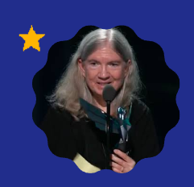

Carol era uma criança retraída e o seu interesse pelos videogames começou cedo, graças a um minigolfe de sua região, onde havia uma sala com jogos de arcades.
Ela nunca gostou de brincar com bonecas, mas sim com um pequeno sistema de trilhos do seu irmão, além de só realmente ter tido contato com um computador no ensino médio (o primeiro jogo que jogou foi um text-based rpg).
Shaw frequentou a Universidade da California, em Berkeley e se graduou em Engenharia Elétrica e Ciência da Computação em 1977, completando depois um mestrado em Ciência da Computação.
Em 2017, Shaw doou toda a sua mobília gamer, incluindo jogos, caixas, source code para o her Strong National Museum of Play.
Carol é admirável porque ela lutou contra os estigmas sociais da época e traçou todo o caminho para que outras desenvolvedoras de jogos pudessem adentrar o mercado formal de jogos. Foi descrita mais de uma vez como uma mulher persistente e a melhor no que faz.
